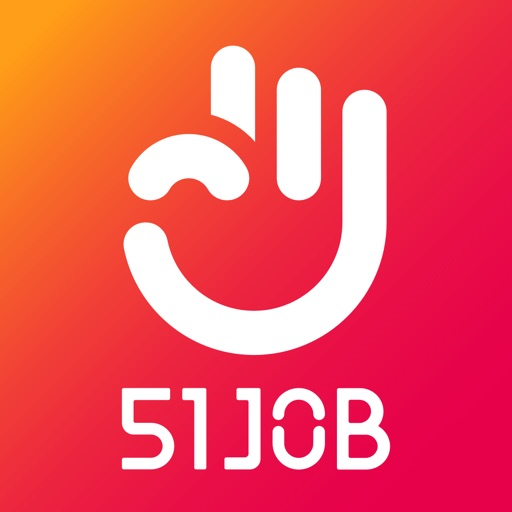
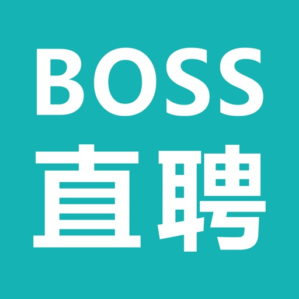
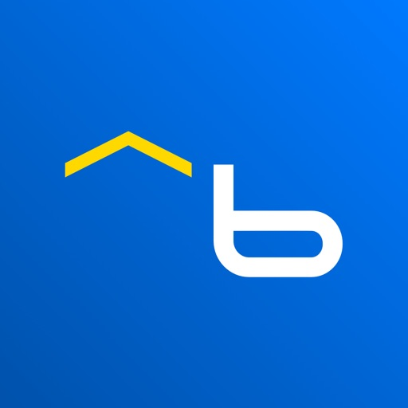

💼 求职招聘
前程无忧51Job-求职招聘找工作
QIANJIN NETWORK INFORMATION TECHNOLOGY (SHANGHAI) CO,LTD.
📊 4 国当前榜单排名📊 الترتيب الحالي في 4 أسواق
数据来源：Apple Marketing Tools RSS · 实时榜单 Top 100 المصدر: Apple Marketing Tools RSS · أحدث ترتيب Top 100
🇨🇳
中国الصين
未进 Top 100خارج المئة الأولى
🇪🇬
埃及مصر
未进 Top 100خارج المئة الأولى
🇸🇦
沙特السعودية
未进 Top 100خارج المئة الأولى
🇺🇸
美国الولایات المتحدة
未进 Top 100خارج المئة الأولى
📈 排名历史趋势📈 اتجاه الترتيب التاريخي
基于 23 个时间点的数据 · 每天 06:00 / 22:00 自动更新بناءً على 23 نقاط زمنية · تحديث تلقائي يومياً 06:00 / 22:00
🇨🇳 中国الصين
无进榜记录لم يدخل القائمة
🇪🇬 埃及مصر
无进榜记录لم يدخل القائمة
🇸🇦 沙特السعودية
无进榜记录لم يدخل القائمة
🇺🇸 美国الولایات المتحدة
无进榜记录لم يدخل القائمة
📸 应用截图📸 لقطات الشاشة
无可用截图لا توجد لقطات شاشة
📝 应用描述📝 وصف التطبيق
前程无忧51Job，专业招聘、求职平台。
众多知名公司、行业大厂都在前程无忧招聘人才、发布职位。海量职位信息覆盖了各行各业，给求职者提供了丰富的选择。
互联网、金融、房产、汽车、快消……各行业大咖都在这里抢夺人才。
销售、财务、技术、客服、产品……各岗位的求职者都在前程无忧投递简历。
企业选择在前程无忧招聘人才，更高效找到理想人选。
求职者选择在前程无忧寻找工作，更快速找到满意工作。
【职位推荐】岗位太多如何选？填写求职意向，为你精准推荐心怡岗位
【秋招专场】神仙外企、大厂实习、国企热招，高薪热岗助你赢在秋招
【好职专区】关注热门专区岗位上新提醒，掌握一手求职资讯，好工作不错过
【人才推荐】海量人才库，精准推荐，招人就是快
【在线沟通】随时随地，在线回复求职者消息，多沟通更有机会撩到人才
【智能邀约】一键匹配精准人才，邀请投递，让招聘更高效
“比一般的招聘软件靠谱的多，都是真实信息，少走很多冤枉路”by 共赏人
“去努力，去投递，才有机会。离职一段时间了，今天终于收到了offer，是自己心仪的企业。每天登录前程无忧很多遍，从焦虑到后面稳定对待，这个app伴随了我这段最难的时间，感谢前程无忧。”by才子佳人
“适合招聘应届毕业生和白领，尤其是一二线城市。推荐”by herowang
“招人挺好用的，简历量多，搜索的简历匹配度和质量高”by hryoyo
我们一直在继续努力，希
ℹ️ 基本信息ℹ️ المعلومات الأساسية
| 类别الفئة | Business |
| 版本الإصدار | 16.8.0 |
| 大小الحجم | 352.1 MB |
| 发布日期تاريخ الإصدار | 2011-01-30 |
| 更新日期تاريخ التحديث | 2026-05-14 |
| 价格السعر | 免费مجاني |
| 内容评级التصنيف العمري | 17+ |
| 支持设备数عدد الأجهزة المدعومة | 127 |
| 支持语言اللغات المدعومة | ZH |
| Bundle ID | com.51job.ios51job |
| Track ID | 415443644 |
🌍 被发现在🌍 تم العثور عليه في
🇨🇳
中国الصين
搜索词كلمة البحث:
招聘195.8万 评分تقييم
🔍 同品类相似应用🔍 تطبيقات مشابهة في نفس الفئة
智联招聘-招聘找工作求职招人软件
★ 4.77 · 137.1万 评分تقييم

BOSS直聘-招聘求职找工作招人
★ 4.73 · 930.6万 评分تقييم
وظائف - أي وظيفة
★ 4.51 · 189 评分تقييم

بيت.كوم للبحث عن الوظائف
★ 4.56 · 9,951 评分تقييم
مرجان - mourjan
★ 4.37 · 6,105 评分تقييم